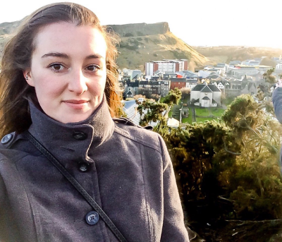

Colton Dillion

...is an actor, designer, engineer, and entrepreneur asking questions about group collaboration.
Ray Doraisamy
...is a synthesist who can't stop asking questions about trust. E-mail Ray directly at wayfinder@foretrek.com.
T Nazarov
...is a researcher in molecular plant sciences asking questions about our future.
Eliot Redelman
...is a life pathfinder asking questions about being and meaning. E-mail Eliot directly at er@foretrek.com.
Emma Swaninger

...is a sentinel trying to ask fewer questions.
Danica Wilbanks

...is a researcher asking questions about values and connection.